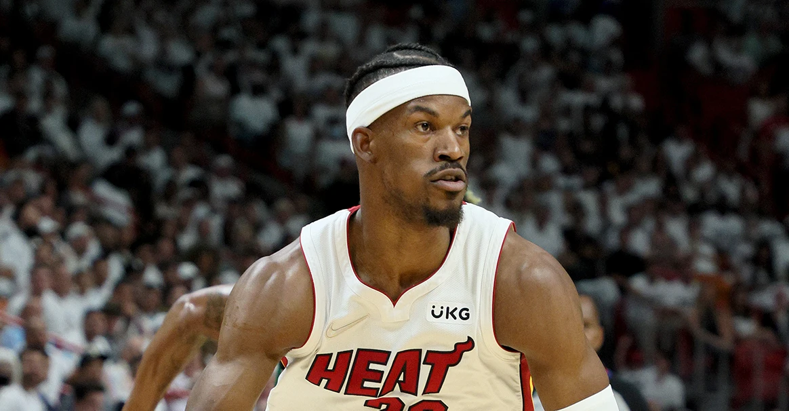

43分扳平系列赛 库里：总比带着1-3回家好
2022-06-11 14:48:33
总决赛客场第四战，是勇士非保不可的一场。最终库里砍下43分10篮板7记三分，勇士107-97战胜对手，大比分跟对手战成2-2平。库里说：“我很骄傲大家都打出了强度和专注，2-2肯定要比1-3回家要好，大家今晚干得不错。“
英格拉姆接受手指手术 预计6-8周后康复
2022-06-11 05:19:17
北京时间6月11日，鹈鹕官方今日宣布，球队锋线布兰登-英格拉姆已于近日接受右手小拇指手术，预计将在6-8周后恢复篮球活动。
巴特勒：下赛季会卷土重来 而且比现在更强
2022-05-30 15:33:55
巴特勒谈到了自己在这个系列赛的表现：“有几场表现我打得很棒，但也有几场比赛我打得非常糟糕。这就是季后赛，每一场比赛你都必须全力以赴，否则就有可能遭遇失利。在这种情况下，每个人的精神压力都是巨大的，但我觉得我的球队非常强硬，我们接受了考验，每个人都打出了精彩的比赛。我向你保证，下个赛季我们还会回来的，而且会比这个赛季更加强大。”
